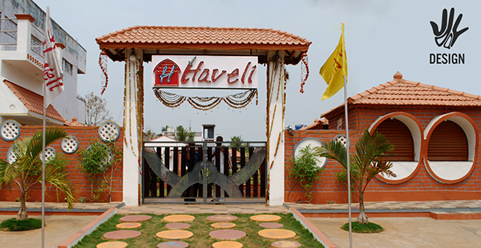

Hii, WELCOME TO MY DHABA

Two types of food are served in our dhabas ---non-vegetarian cuisine (which is the most popular) and vegetarian fare termed vaishno dhabas (where food is cooked in pure ghee or clarified white butter).
Dal makhni is a popular dish in the vegetarian dhaba
We use a lot of freshly ground whole spices.
These spices not only increase the taste and flavour, but enhance the aroma as well. Another reason why they use whole spices is, they are cheaper than the powdered spices.